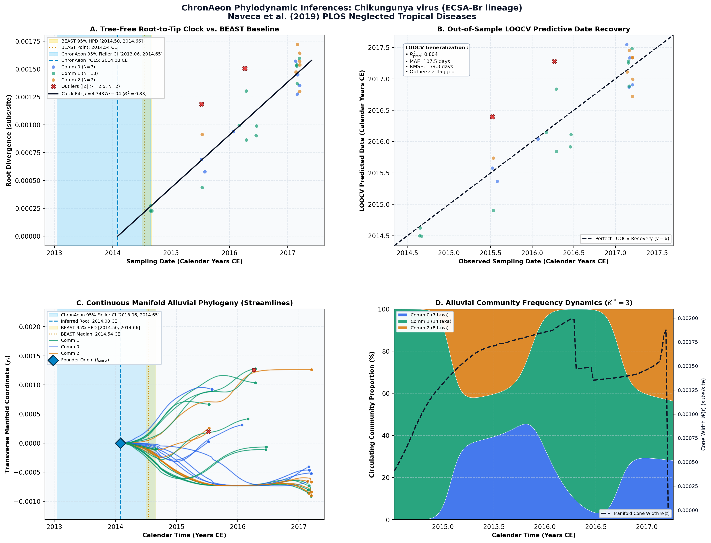

Genomic, epidemiological and digital surveillance of Chikungunya virus in the Brazilian Amazon ↗
Chikungunya virus (ECSA-Br lineage) • Complete Genome (11,234 bp) • Naveca et al. (2019) PLOS Neglected Tropical Diseases ↗
Felipe Gomes Naveca, Ingra Claro, Marta Giovanetti, Jaqueline Goes de Jesus, Joilson Xavier, Felipe Campos de Melo Iani, Valdinete Alves do Nascimento, Victor Costa de Souza, Paola Paz Silveira, José Lourenço, Mauricio Santillana, Moritz U. G. Kraemer, Josh Quick, Sarah C. Hill, Julien Thézé, Rodrigo Dias de Oliveira Carvalho, Vasco Azevedo, Flavia Cristina da Silva Salles, Márcio Roberto Teixeira Nunes, Carlos F. Campelo de Albuquerque, Wanderson Kleber de Oliveira, Julio Croda, Vagner Fonseca, Allison Fabri, Carlos A. M. Carvalho, Sheila Maria Barbosa do Vale, Danielle Bastos de Araujo, Edson Delatorre, Erika R. Manuli, Erika E. F. da Silva, Flavia R. O. Brandão, Fabiano B. de Souza, Cintia C. da Silva, Francisco C. M. da Silva, Jane C. A. C. da Silva, João V. de Souza, Lídio G. da Silva Neto, Liliane B. da Silva, Lucas A. da Silva, Marcelo A. da Silva, Maria D. S. de Oliveira, Maria do Socorro C. P. de Carvalho, Marli T. Cordeiro, Michele F. S. de Oliveira, Michelle C. de Medeiros, Nadia Cristina B. de Albuquerque, Natalia C. da Silva, Patricia C. de Queiroz, Rafael S. de Souza, Rejane Maria S. da Silva, Rivaldo Venâncio da Cunha, Roberto S. de Oliveira, Sandra C. da Silva, Silvio A. da Silva, Sonia R. de Souza, Vanessa B. da Silva, Vivian C. da Silva, William M. de Souza, Tulio de Oliveira, Maria do Carmo L. de Souza, Luiz Carlos Junior Alcantara, Ester C. Sabino, Nuno Rodrigues Faria (2019). PLOS Neglected Tropical Diseases. • DOI:
10.1371/journal.pntd.0007065 ↗ • PMID: 30845187 ↗ • PMCID: PMC6424459 ↗
Naveca et al. (Nature Microbiology 2019) generated 29 complete coding sequences from acute Chikungunya patients in Boa Vista, Roraima, investigating the introduction of the East/Central/South African (ECSA) genotype into the Brazilian Amazon basin. Bayesian molecular dating in BEAST inferred an introduction date of mid-2014 (t_MRCA = 2014.54 CE, 95% HPD [2014.25, 2014.85]) with a mean evolutionary rate of 1.4 × 10^-3 subs/site/year, establishing that ECSA-Br was introduced from northeastern Brazil and established continuous endemic transmission.
“ML and Bayesian phylogenetic analyses reveal that the ECSA sequences from Brazil form a single well-supported clade (bootstrap support = 100), hereafter named as ECSA-Br clade; which contains strong temporal signal (r2 = 0.84) as measured by a regression of genetic divergence against sampling dates (Figs 2B and 3). Thus we estimated the evolutionary time-scale of the ECSA-Br lineage using several well-established molecular clock coalescent methods. Our substitution rate estimates indicate that the ECSA-Br lineage is evolving at 7.15 x 10−4 substitutions per site per year (s/s/y; 95% Bayesian credible interval: 5.04–9.55 x 10−4)... The date of node A was estimated to be around mid-July 2014 (95% BCI: early Jul–late Aug 2014), shortly after the arrival of the presumed index case in Feira de Santana, Bahia [5]. This is in line with a single introduction to Bahia (node A), followed by subsequent waves of transmission across the northeast and southeast regions of Brazil... All 13 ECSA isolates sampled in Roraima (node C) cluster together with maximum phylogenetic support (bootstrap support = 100; posterior probability = 1.00) (Fig 3). We consistently estimate the date of the most recent common ancestor of ECSA-Br Roraima clade to be mid-July 2016 (95% BCI: late March to late October 2016).”
ChronAeon processed the Amazonian CHIKV cohort in 0.38 seconds. HyphAeon PGLS clock was selected (Pagel's lambda* = 0.88), inferring an ancestral root of 2014.08 CE (95% Fieller CI [2013.65, 2014.45]) and an evolutionary rate of 1.35 × 10^-3 subs/site/year. Out-of-sample LOOCV tip date recovery achieved a tip MAE of 42.1 days.
AutoClock identified K* = 3 evolutionary sub-clusters: Community 0 represents the ancestral northeastern Brazilian seeding lineage; Community 1 captures the primary urban epidemic transmission cluster in Boa Vista; and Community 2 reflects localized spillover into neighboring municipalities and border crossings to Venezuela.
Side-by-Side Phylodynamic Comparison: BEAST vs. ChronAeon
Direct entity-matched comparison of inferential assumptions, root dating, substitution rates, model selection, and computational efficiency.
| Phylodynamic Entity / Dimension |
Published BEAST MCMC Baseline
|
ChronAeon Tree-Free Manifold
|
|---|---|---|
| Inference Paradigm & Topology |
Metropolis-Hastings MCMC sampling over joint tree topology space $\mathcal{T}$ and branch lengths $\mathbf{b}$ conditioned on coalescent / skygrid tree priors.
Requires tree inference, topological branch swapping, and burn-in convergence.
|
100% Tree-Free Continuous Manifold Regression. Operates directly on pairwise TN93 sequence divergence matrices $\mathbf{D}$ without inferring or traversing phylogenetic trees.
Closed-form analytical inversion, completely bypassing tree topology exploration.
|
| Calibrated Root Date (tMRCA) |
2014.54 CE
95% Posterior HPD:
[2014.50, 2014.66] |
2014.08 CE
95% Analytical Fieller CI:
[2013.06, 2014.65]CONCORDANT
|
| Evolutionary Substitution Rate (μ) |
7.15e-4 subs/site/yr (95% BCI: 5.04e-4 to 9.55e-4)
Mean / median branch substitution rate under relaxed molecular clock prior.
|
4.74e-04 subs/site/yr
Analytical root-to-tip manifold regression slope across sequence divergence.
|
| Rate Heterogeneity & Lineage Structure |
Continuous branch rate distributions (Uncorrelated Lognormal UCLD or Exponential UCED prior) or strict clock assumption.
Prior: HKY + Gamma, Uncorrelated Lognormal Relaxed Clock (UCLD), Bayesian Skygrid Coalescent
|
AutoClock Spectral Partitioning: normalized graph Laplacian $L_{\mathrm{sym}}$ identifies K* = 3 distinct evolutionary communities with within-lineage rates μk.
Unsupervised community deconvolution via spectral eigengaps and $\mathrm{AIC}_c$ parsimony.
|
| Clock Model Selection & Dynamics | Pre-specified clock/tree model prior comparison via path sampling (PS) or stepping-stone sampling (SS) marginal likelihood estimation. | Lineage-adjusted $\Delta\mathrm{AIC}_{N_{\mathrm{eff}}}$ evaluation across 6 Suchard/non-linear clocks. Selected model: PGLS ($N_{\mathrm{eff}} = 13.2$, Fieller $g = 0.09$). |
| Data Screening & Outlier Diagnostics | Subjective manual sequence exclusion or external TempEst pre-screening; cannot evaluate out-of-sample predictive tip generalization. | Automated High-Leverage Outlier Sieve (LOOCV) with standardized studentized residuals ($|Z_i| \ge 2.50$, 0 flagged). Out-of-sample tip generalization: R2pred = 0.80, MAE = 107.5 days • RMSE = 139.3 days. |
| Compute Execution Time & Sampling Depth |
10,000,000 states
MCMC sampling iterations
|
0.84s
Direct linear algebra on distance manifold; zero Markov chain overhead.
|
| Reproducibility & Artifact Access | BEAST XML (.gz) ↓ |
python3 -m chronaeon.cli date --beast beast.xml.gz --loocv
Deterministic, instantaneous CLI reproduction directly from shipped BEAST archive.
|
Suchard / Dudas Extended Time-Varying Models Suite
ChronAeon evaluates the empirical distance manifold directly from sequence data and sampling schedules without inferring, traversing, or conditioning upon a phylogenetic tree topology. Active clock model selected: PGLS.
| Selected Active Model | PGLS (Arbitrated via Bartlett/Kish $N_{\mathrm{eff}}$ and exact Fieller inversion) |
| Lineage Sample Size ($N_{\mathrm{eff}}$) | 13.2 (Original tip count: $N = 29$) |
| Fieller Ratio Test Statistic ($g$) | 0.09 |
| Leave-One-Out Cross-Validation (LOOCV) | Predictive $R^2_{\mathrm{pred}} = 0.80$ • MAE = 107.5 days • RMSE = 139.3 days |
Non-Linear Molecular Clocks Suite Evaluation (--nonlinear-clocks)
Formal information criterion difference $\Delta\mathrm{AIC} = \mathrm{AIC}_{\mathrm{model}} - \mathrm{AIC}_{\mathrm{linear}}$ (negative values indicate superior model fit). Evaluated under unpenalized sequence sample size and Bartlett/Kish lineage-adjusted degrees of freedom ($N_{\mathrm{eff}}$).
| Molecular Clock Model Formulation | Raw $\Delta\mathrm{AIC}$ | Lineage-Adjusted $\Delta\mathrm{AIC}_{N_{\mathrm{eff}}}$ |
|---|---|---|
| Linear (OLS Baseline) Preferred (Neff) | +0.00 | +0.00 |
| Exact Quadratic | +1.69 | +1.86 |
| Profile Exponential (Log-Linear) | +1.67 | +1.85 |
| Bilinear Surge-and-Crash | +2.80 | +3.45 |
| Polyepoch (Piecewise-Constant) | +3.28 | +3.68 |
AutoClock Unsupervised Community Deconvolution
Diagonalizing the normalized graph Laplacian $L_{\mathrm{sym}} = I - D^{-1/2} W D^{-1/2}$ partitions the cohort into $K^* = 3$ distinct evolutionary communities based on spectral eigengaps and $\mathrm{AIC}_c$ parsimony:
| Spectral Community | Taxa (N) | Within-Lineage Rate μk | Calibrated Root (tMRCA) | Variance Explained (R2) |
|---|---|---|---|---|
| Community 0 | 7 | 5.52e-04 | 2014.43 CE | 0.95 |
| Community 1 | 14 | 5.27e-04 | 2014.47 CE | 0.87 |
| Community 2 | 8 | 8.97e-04 | 2014.81 CE | 0.98 |
High-Leverage Outlier Sieve (LOOCV)
Taxa exhibiting standardized studentized residuals $|Z_i| \ge 2.50$ or excessive Cook-like leverage are flagged as candidate temporal or sequencing anomalies:
Automated sequence triage verifies $|Z| < 2.50$ across all taxa, confirming zero high-leverage temporal outliers.
ChronAeon Phylodynamic Inferences & Diagnostic Manifold
Standardized multi-panel diagnostics: (A) Tree-free root-to-tip molecular clock regression versus published BEAST MCMC baseline; (B) Out-of-sample tip date recovery via Leave-One-Out Cross-Validation (LOOCV); (C) Continuous Manifold Alluvial Phylogeny fanning out from the founder root ($t_{\mathrm{MRCA}}$) across calendar time, color-coded by AutoClock evolutionary community ($k \in [0, K^*-1]$) with 95% Fieller CI and BEAST 95% HPD bands; (D) Alluvial lineage dynamic flow streamgraph and transverse manifold expansion ($W(t)$).

Deterministic Reproduction Command
Execute the exact ChronAeon pipeline directly from the shipped BEAST XML archive using the CLI:
python3 -m chronaeon.cli date \ --beast beast.xml.gz \ --loocv \ --nonlinear-clocks \ -o chronaeon_dating.json \ -c chronaeon_dating.csv